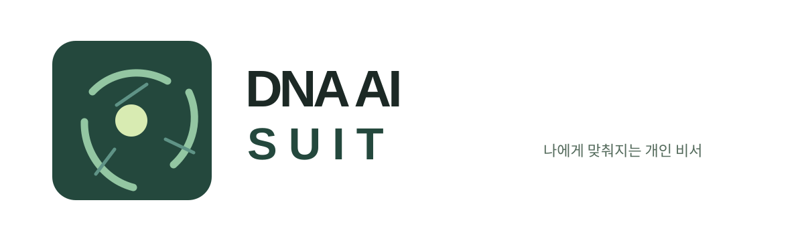
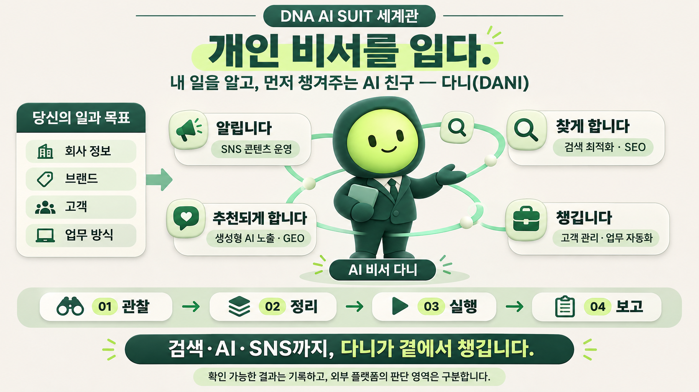

01 · SNS AUTOMATION
인스타 · 쓰레드
AI 마케팅 · SNS 자동화 솔루션
사전 질문지와 승인 절차를 거쳐 인스타그램·쓰레드 콘텐츠를 일관되게 운영합니다. 연동 범위는 계정 권한에 따라 정합니다.

도입 범위 정리DNA AI SUIT · YOUR FRIENDLY AI SECRETARY
내 일을 알고, 먼저 챙겨주는 AI 친구 — 다니(DANI).
검색 노출부터 SNS 콘텐츠, 고객 관리와 반복 업무까지 DNA AI 슈트가 곁에서 챙깁니다.
DNA AI 슈트는 고객이 검색하는 질문, 홈페이지의 공식 정보, AI가 읽을 근거, SNS 노출이 같은 브랜드를 말하도록 한 흐름으로 연결합니다.
브랜드와 운영 사업자
DNA AI 슈트는 투어티플레이스(Tour-Tplace)가 운영하는 AI 서비스 브랜드입니다.
내 일을 알고, 먼저 챙겨주는 AI 친구
다니는 단순한 캐릭터가 아니라 DNA AI 슈트의 서비스 경험입니다. 사용자의 목표를 이해하고, 필요한 일을 정리하고, 실행 과정과 확인 가능한 결과를 알기 쉽게 보고합니다.

각 서비스의 작동 흐름과 실제 확인 결과를 카드로 한눈에 정리했습니다.
사전 질문지와 승인 절차를 거쳐 인스타그램·쓰레드 콘텐츠를 일관되게 운영합니다. 연동 범위는 계정 권한에 따라 정합니다.
고객 질문과 홈페이지 내용을 맞추고, 검색·AI가 읽을 공식 정보(JSON-LD·robots·검색 등록)를 정비해 결과를 보고합니다.
기업 맞춤형 AI 플랫폼 개발과 바로 쓰는 구독형 SaaS, 예약·문의·데이터베이스가 연결되는 실전 웹 시스템을 구축합니다.
업무 AI·자동화 도입 과정에서 내부 문서·고객 정보 취급, 외부 서비스 연결, 접근 권한을 점검하고 우선 과제를 정리합니다.
QUICK FINDER · 우리 회사 고민별 바로 매칭 가이드
2026.11 · 한눈에 보는 진단·적용 보드
글로만 나열된 제안서 대신, 현재 검색 노출 형태·구조 점검 상태·진행 단계와 비용을 한눈에 보실 수 있도록 정리해 전달합니다.
요약 설명(<meta description>) 누락으로 본문 임의 조각이 노출되며, AI 크롤러 안내 규칙이 비어 있습니다.
고객 질문에 맞춘 150자 공식 요약, FAQ 구조화 명찰(JSON-LD), 네이버·Google·Bing 색인 연결까지 한 흐름으로 정비합니다.
※ 각 채널의 공식 링크(sameAs)와 정보를 일치시켜 검색엔진·AI의 브랜드 판독 일관성을 높입니다.
검색·AI 기준선 점검 & 처방 PDF + 수정 초안
직접 수정 + JSON-LD + 3대 콘솔 등록
진단부터 반영·결과 확인까지 일괄
신규 원페이지 구축 또는 승인 기반 SNS
현재 홈페이지의 공식 정보, 고객 질문, 검색 접근 상태를 확인하고 우선순위를 제안합니다.
승인된 범위에서 홈페이지 내용과 검색 준비 항목을 정비하고 공식 검색 도구 등록을 지원합니다.
수정 내역과 접근·등록 확인 결과를 정리해 전달합니다. 추가 관찰이 필요한 항목도 구분합니다.
자사 홈페이지의 검색 접근과 공식 검색 도구 등록 절차를 점검했습니다. 이 경험을 바탕으로 고객 사이트의 현재 상태부터 확인합니다.
작업 완료·접근 가능 여부·등록 상태는 확인할 수 있습니다. 검색 순위, AI 답변의 인용, 문의 증가 여부는 외부 서비스와 시장 상황에 따라 달라집니다.
적용 범위 문의하기 ↗목표를 분명히 하고, 필요한 범위부터 빠르게 구현한 뒤, 실제 운영과 검색 과정에서 확인된 팩트 데이터로 다음 단계를 결정합니다.
현재 홈페이지, 네이버·AI 검색 상태, SNS 운영 흐름과 보안 취약 요소를 사실 기준으로 확인합니다.
사업 우선순위에 맞춰 AI 플랫폼·SaaS 범위, Schema·메타 구조화 규격, 사내 보안 기준을 정합니다.
홈페이지·SNS 자동화·AI 시스템을 구축하고 검색 색인, AI 인용 상태, 운영 지표를 구분해 보고합니다.
DNA AI 슈트의 AI 마케팅, AI 보안, AI 플랫폼, AI SaaS 서비스 도입 전 가장 많이 확인하시는 질문을 쉬운 말로 정리했습니다.
DNA AI 슈트는 검색엔진·생성형 AI·SNS에서 고객이 브랜드를 발견하고 신뢰하도록 SEO·GEO 진단, 콘텐츠 자동화, 공식 정보 정비와 성과 확인을 연결합니다. 필요에 따라 AI 플랫폼·SaaS·보안까지 사업 운영 흐름에 맞춰 구축합니다.
검색엔진과 AI가 브랜드 정보를 읽을 수 있도록 홈페이지 내용과 검색 등록 상태를 점검하고 개선합니다. 실제 노출 순위나 AI 추천 여부는 검색 서비스의 판단에 따라 달라져 보장할 수 없습니다.
맞춤형 AI 플랫폼은 기업의 사내 업무, 예약·문의 홈페이지, 기존 데이터베이스와 연결해 전용 시스템으로 구축하는 방식입니다. AI SaaS 서비스는 별도 개발 부담 없이 마케팅 자동화나 검색 진단 같은 검증된 소프트웨어를 바로 도입해 지속적으로 활용하는 형태입니다.
가능합니다. 생성형 AI와 자동화 도입 시 내부 문서·고객 정보 취급, 외부 서비스 연결, 접근 권한 상태를 확인하고 우선 보완 과제를 정리합니다. 점검만으로 모든 유출 위험이 사라지는 것은 아닙니다.
콘텐츠 기획·검토와 홈페이지의 문의·예약 흐름을 함께 설계할 수 있습니다. 게시 자동화와 외부 채널 연동 범위는 계정 권한과 운영 환경을 확인한 뒤 정합니다.
가능합니다. 기존 홈페이지의 수정 권한과 현재 상태를 확인한 뒤, 공식 정보와 검색 접근에 필요한 부분만 정비할 수 있습니다. 적용 범위와 확인 결과는 작업 후 구분해 안내합니다.
07 / START A CONVERSATION
공식 대표 이메일 및 상담 채널 연동을 준비 중입니다. 먼저 오른쪽에서 검토 중인 분야를 선택해 상담용 사전 브리프를 복사해 두실 수 있습니다.
STEP 01 · 도입 검토 분야 선택 (복수 선택 가능)
선택한 분야 기준으로 상담 브리프를 생성합니다. 공식 채널 주소가 연결되면 이곳에서 바로 접수할 수 있습니다.